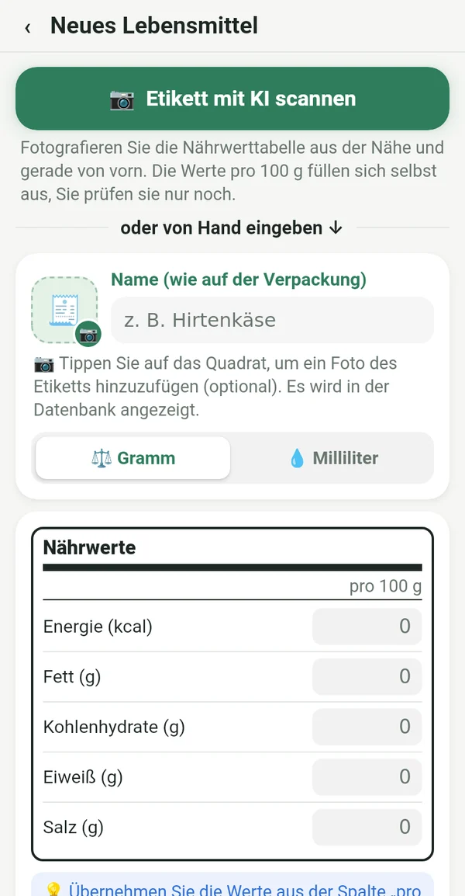
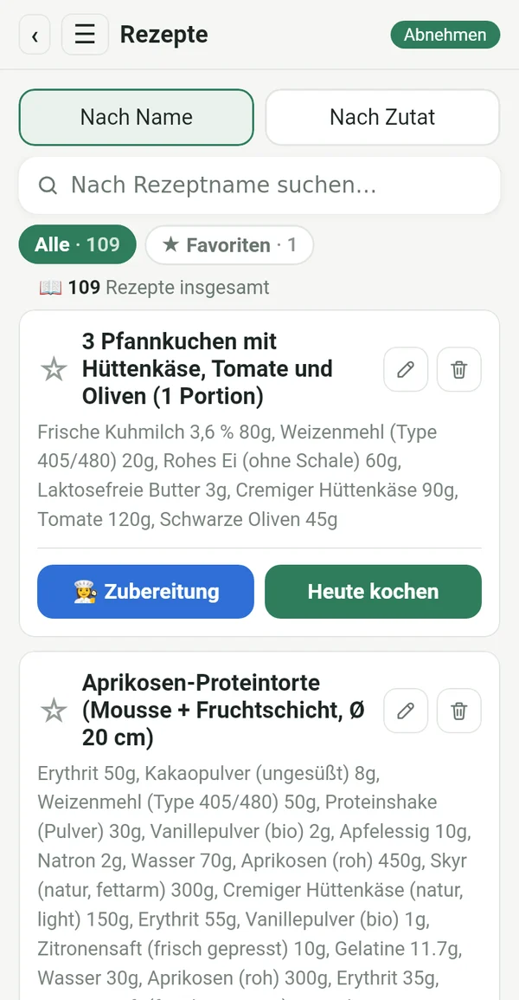
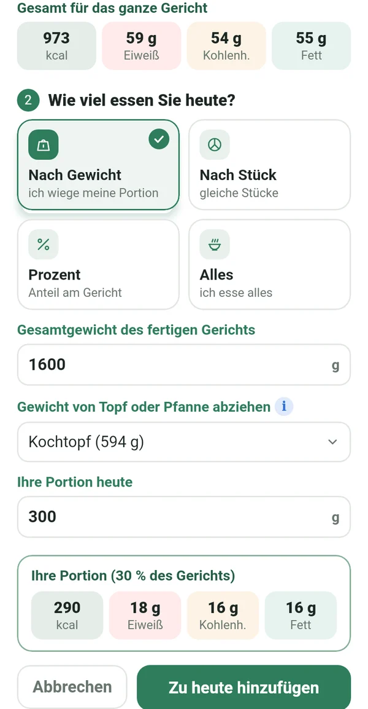
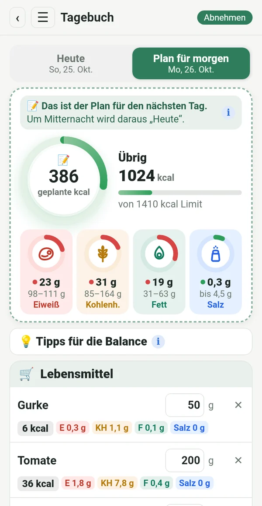
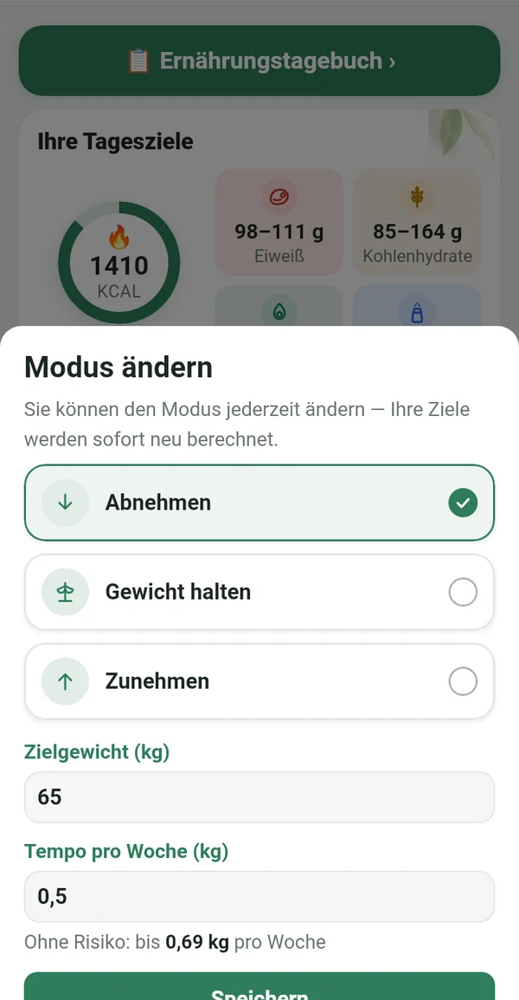
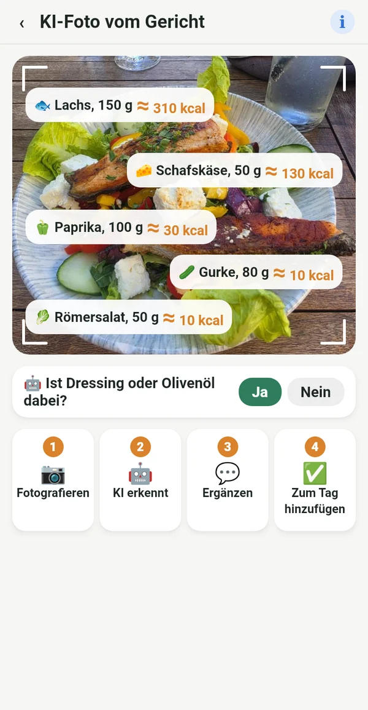

Alles, was Sie brauchen, nichts Überflüssiges

Genau vom Etikett, nicht aus fremden Datenbanken
Übernehmen Sie die Werte pro 100 g von der Packung oder fotografieren Sie einfach das Etikett. Die Zahlen stimmen mit dem überein, was Sie wirklich essen.
📷 Ein KI-Foto des Etiketts füllt die Felder für Sie aus
Ihr digitales Kochbuch
Rezepte aus Omas Heft, aus den Kochbüchern im Regal und aus Ihren Lieblingsgruppen, alle an einem Ort. Einmal eingeben und immer wieder nutzen.

Die genaue Portion aus dem ganzen Topf
Wiegen Sie das fertige Gericht mitsamt Topf. Macrolia zieht den Topf ab und berechnet genau, wie viel Sie gegessen haben.

Planen, einkaufen, essen
Tragen Sie schon heute ein, was Sie morgen essen. Kaufen Sie nur, was Sie brauchen, und um Mitternacht wird der Plan zu Ihrem Tag.

Abnehmen, Gewicht halten oder zunehmen
Am Ziel wechseln Sie zu „Gewicht halten“. Ändert sich das Leben, wechseln Sie einfach den Modus. Ihr Tageslimit folgt der Mifflin-St-Jeor-Formel und klinischen Empfehlungen, mit sicherem Tempo.

Auch auswärts wissen, was Sie essen
Fotografieren Sie den Teller, und die KI erkennt, was darauf ist. Der Wert ist geschätzt und mit ≈ markiert. Lieber geschätzt als gar nicht.
Kalorien aus Bewegung
Über Health Connect vom Handy, von der Uhr oder einer Fitness-App. Sie wählen, wie viel zum Limit dazukommt.
Gewicht, Grafik, Bericht
Gewichtsverlauf, private Vorher-nachher-Fotos und ein Bericht als PDF und Excel.
Tipps für die Balance
Kurze Hinweise, wenn Eiweiß oder Fett nicht im Ziel liegen. Hilft, ohne zu bevormunden.
Für jede Frau, die dranbleiben will
Jo-Jo kommt nicht von der Diät. Es kommt, wenn du aufhörst.
Nach dem Baby findest du wieder in deinen Rhythmus.
Das Alter ist kein Grund aufzugeben.
Auch im Restaurant weißt du, was du bestellst.
Wer den Plan genau einhält, bekommt ein genaues Ergebnis.
Ihre Daten gehören Ihnen
Alles bleibt auf Ihrem Handy. Keine Registrierung, keine Werbung, kein Tracking. Ein Foto für die KI-Analyse wird nur für die Berechnung gesendet und nicht gespeichert.
Abo
Monats- oder Jahresabo, beide mit 7 Tagen gratis. Jederzeit in Google Play kündbar.
In 14 Sprachen, mit hellem und dunklem Design.
Fragen
Wann erscheint die App?
Wir bereiten den Start bei Google Play vor. Schreiben Sie uns, und wir sagen Ihnen Bescheid, wenn es so weit ist.
Gibt es eine iPhone-Version?
Vorerst nur für Android. Eine iPhone-Version ist für später geplant.
Warum gibt es keinen Barcode-Scanner?
Barcode-Datenbanken werden von Nutzern befüllt und sind oft falsch oder veraltet. In Macrolia stammt jeder Wert vom Etikett, deshalb stimmen die Zahlen.
Wie viele KI-Fotos kann ich machen?
Bis zu 100 Fotos im Monat, für Etiketten und Gerichte zusammen.